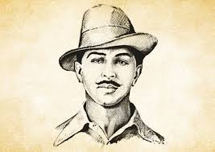

Bhagat Singh stands as a towering figure in the annals of India's struggle for independence. His name evokes a sense of unwavering courage, profound patriotism, and a fierce commitment to liberation from colonial rule. Though his life was tragically cut short at the age of 23 by execution, his sacrifice ignited the flames of revolution in countless hearts. Singh, with his associates, played a significant role in inspiring thousands of youths to fight for India's freedom, leaving an indelible mark on the independence movement. He is revered as Shaheed-e-Azam (Great Martyr) and his legacy continues to inspire generations in India.